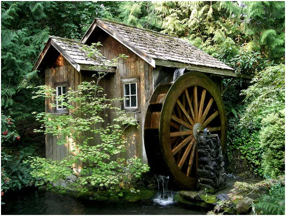
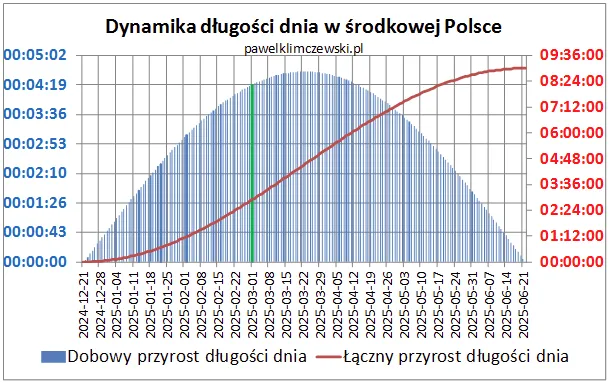
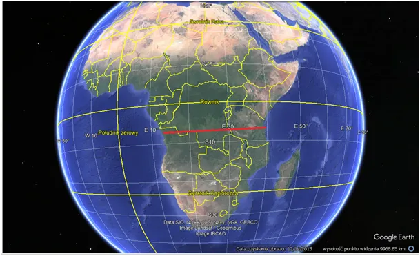
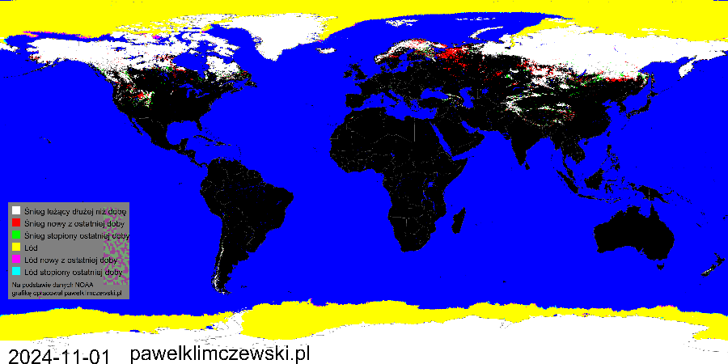

W marcu jak w garncu.
Dzień już blisko o 3 h dłuższy niż w grudniu, tam, gdzie świeci Słońce jego moc to już 450 watów na metr kwadratowy, czyli połowa tego, co mamy latem. Długość dnia latem przesądzi, że temperatury wzrosną do ponad 30 st. C, bo podczas krótkiej nocy ziemia nie zdąży ostygnąć. Teraz przed przymrozkami chronią nas chmury absorbujące ciepło. Jak pokazuje niebieski wykres wchodzimy w najbardziej dynamiczną funkcji sinus, wg której Ziemia zmienia swe nachylenie do Słońca. Zenit osiąga teraz 7 równoleżnik poniżej równika, do którego Słońce dotrze za 19 dni.

Ta duża prędkość zmiany spowoduje, że będziemy jak co roku obserwować dynamiczną aurę. Zapowiada się słonecznie, co oznacza suszę. Rośliny, gdy zaczną wegetację przetransportują wodę z gleby do atmosfery.

Na animacji minione 4 miesiące. Śnieg już mięliśmy w listopadzie, o czym łatwo zapominamy. Niestety z powodu masowej melioracji spłynął on już do morza. W kolejnej fazie straszenia będziemy walczyli o wodę, oczywiście woda zostanie opodatkowana jak obecnie oddychanie.

Wodę bardzo łatwo zatrzymać budując małe stopnie wodne. Można w tym miejscu zainstalować turbinę i produkować energię elektryczną. Ta prawdziwie odnawialna energia była zwalczana przez socjalizm sowiecki i jest ignorowana przez socjalizm europejski. Jest to de facto energia słoneczna, bo Słońce odparowując wodę do chmur wykonuje całą pracę. Grawitacja ściąga deszcz na górę, w górach najwięcej pada z powodu zjawiska fenu, potem strumień płynie z górki sam. W stawie rosną ryby, wodą ze stawu w suszy podlejemy ogród, wszystko za darmo i tu jest klucz. Właściciel młyna jest niezależny, a to rzecz straszna w socjalizmie.
Paweł Klimczewski